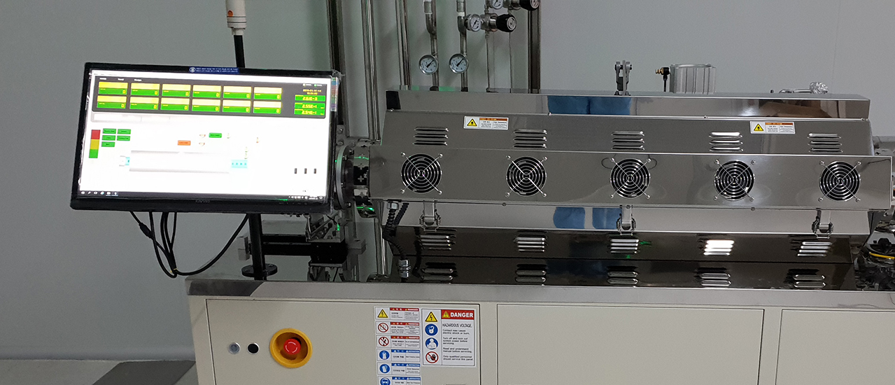
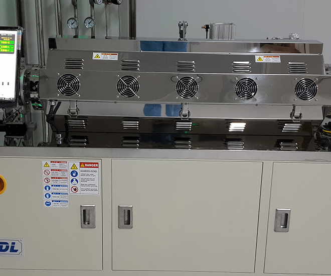

소형장비
Small Size Equipment
 소형장비는 적은 양의 시료를 고순도로 정제하는데 사용합니다.
주로 연구 목적으로 사용하여 R&D 장비라고도 합니다.
고객께서는 소형장비를 사용하여 정확하고 빠른 정보를 쉽게 얻을 수 있습니다. 중형, 대형 장비에 비해 상대적으로 저렴합니다.
소형장비 특성상 대학교, 기업 연구소 등에 설치하여 사용합니다.
-
R&D용 재료 등
소량 정제 최적화 -
상대적 저렴한
도입 가격 -
주로 연구 목적
소량 합성후 초고순도 정제용 -
중.대형 승화정제기 적용전
정제 정보 획득용 -
대학교, 기업
연구소 등 설치